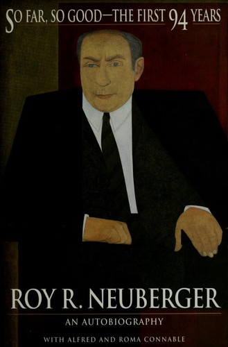

1903年出生在纽约的罗伊·诺伊伯格（Roy R. Neuberger）十三岁时已失去双亲。十七岁那年，他在纽约大学只读一学期便退学，进入百货公司B. Altman工作，对艺术产生兴趣，也尝试学画。1924年，快满21岁的他凭继承所得前往巴黎，在索邦大学旁听，白天在一家装饰艺术品和古董店工作，一周去卢浮宫三次，并结识艺术史学家迈耶·夏皮罗（Meyer Schapiro）。读到梵高生前穷困的经历后，他决定收藏在世艺术家的作品；为了获得足够资本，1929年回到纽约进入华尔街，几个月后便赶上大崩盘。
当时市场最炙手可热的股票是美国无线电公司（RCA）。诺伊伯格卖空100股，作为自己多头资产的对冲；崩盘后RCA股价最终跌到个位数，他在回忆录中称个人资本损失约15%。这不是单笔空头凭空带来的胜利：他仍持有会下跌的股票，空头只是降低了组合净暴露。1939年，他与罗伯特·伯曼（Robert Berman）共同创立Neuberger & Berman；1950年又创建较早采用免申购费模式的Guardian Mutual Fund。所谓“免申购费”是取消销售时向投资者收取的前端佣金，不代表基金没有管理和运营费用。公司同时经营经纪和资产管理业务，这段经历使书中关于佣金、客户利益和基金销售的观察比一般格言更具体。
诺伊伯格同时是二十世纪美国现代艺术的重要收藏家。他坚持购买仍在世艺术家的作品，因为钱能直接帮助创作者继续工作；他收藏爱德华·霍普、米尔顿·艾弗里、杰克逊·波洛克等人的作品，却不把艺术当作短期倒卖的另一种证券。1969年，诺伊伯格承诺向纽约州立大学普切斯学院捐赠300件作品，由此促成诺伊伯格艺术博物馆；馆藏后来扩充到近七千件。原文把最初捐赠写成九百多件，混淆了后续捐赠与馆藏增长。投资与收藏在他那里共享独立判断和长期持有的习惯，但他也明确区分两者：购买在世艺术家作品含有资助目的，不能只用财务回报衡量。
1997年，94岁的诺伊伯格与阿尔弗雷德、罗玛·康纳布尔（Alfred and Roma Connable）合著回忆录《目前为止还不错：头94年》，由Wiley出版，正文221页。书中把1929年崩盘前后的华尔街、Neuberger & Berman的早期经营和艺术收藏放在一起，章节短，重人物与轶事，并不逐笔还原基金业绩。他还回忆1937年的下跌、固定佣金年代的客户关系以及1987年股灾；跨度很长，但各阶段详略不一。1932年6月29日，他结婚当天道琼斯指数跌至42点，这类日期细节让大萧条不只是后来画出的长期走势图。《出版人周刊》批评其投资建议停留在“仔细分析公司”这类常识，也指出作者很少解释自己为何看错可口可乐等公司；Kirkus则把它概括为“有趣但粗略”的回忆录。真正稀缺的是一个1929年入行者对行业制度变化的长期记忆。诺伊伯格2010年去世，享年107岁，目前没有正式中文译本。阅读时可把RCA空头、Guardian基金和艺术捐赠分别与市场数据、基金资料和博物馆档案核对。他所说1929年只损失约15%来自本人回忆，书中没有提供可重建账户的交易清单；两位合作者又参与塑造叙述。因此，它本身是带个人选择的口述史，不是完整交易档案。把1937年和1987年的回忆也按同一标准处理，才能保留见证价值而不夸大精确度。